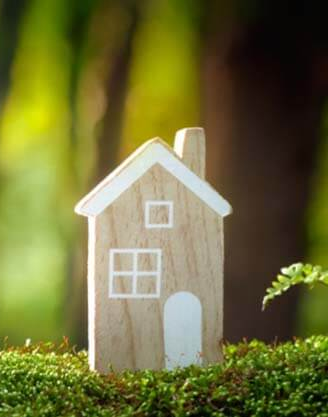

Materiales Ecológicos
Los materiales utilizados en la construcción tienen un gran impacto en el medio ambiente. Optar por materiales reciclados, locales o que tengan un bajo impacto energético es una de las formas más efectivas de reducir la huella de carbono de una edificación. Por ejemplo, el uso de maderas certificadas, ladrillos de adobe o cemento reciclado.
Diseño Energéticamente Eficiente
La eficiencia energética en un edificio no solo implica reducir el consumo de electricidad, sino también optimizar el uso de recursos naturales como la luz solar y la ventilación. Un diseño que integre ventanas estratégicamente ubicadas y sistemas de ventilación cruzada puede reducir considerablemente la necesidad de iluminación artificial y aire acondicionado.
Gestión del Agua
La gestión eficiente del agua es un pilar fundamental en la arquitectura sostenible. Los recursos hídricos son limitados, y su uso responsable en las edificaciones es crucial para reducir el impacto ambiental y promover la sostenibilidad. Esta correcta gestión del agua no solo disminuye el consumo, sino que también contribuye a la preservación de este recurso vital para futuras generaciones.
Energías Renovables
Incorporar fuentes de energía renovables, como paneles solares, generadores eólicos o sistemas geotérmicos, puede hacer que un edificio sea completamente autosuficiente en términos de energía. El uso de estas tecnologías reduce la dependencia de combustibles fósiles y disminuye las emisiones de gases de efecto invernadero.
Aislamiento Térmico
Un buen aislamiento térmico es esencial para mantener una temperatura interior confortable sin necesidad de depender tanto de sistemas de calefacción o refrigeración. Materiales como lana de roca, fibra de vidrio, o incluso opciones más ecológicas como el cáñamo o la celulosa reciclada, son excelentes para lograr una edificación eficiente en términos térmicos.